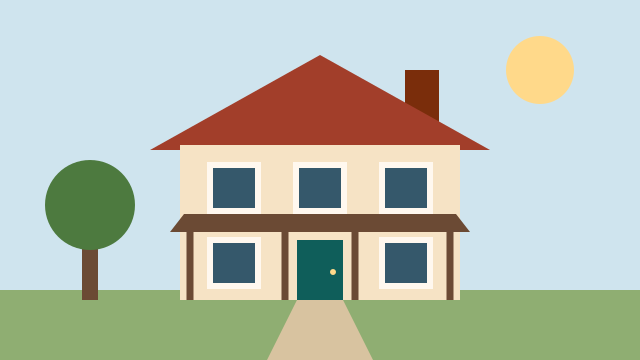

Quillfeather House Museum: A Window into Everyday Life
Nestled in the heart of Merrow Bend, the Quillfeather House Museum invites visitors to step into a bygone era. This digital project brings together rooms, objects, and stories to illuminate domestic life in a small river town.

Archive fact sheet
Checked by the curator against museum records. Use it to test the rest of the page.
- House completed
- 1884
- Last family resident
- Beatrix Quillfeather, who lived here until her death in 1958
- Opened to the public as a museum
- 1962
The House and Its Family
Completed in 1884, the house sheltered three generations of the Quillfeather family. Beatrix Quillfeather, a seed merchant's daughter and a devoted diarist, lived here until her death in 1958.[1] Her notebooks record recipes, the weather, and the price of coal.
From Home to Museum
Local volunteers cataloged the furnishings room by room. The museum first opened its doors in 1926, and it has since welcomed students, researchers, and curious neighbors.
Explore the Collection
The collection invites visitors to connect ordinary objects with the people who used them, from a parlor piano to a well-worn bread board.
The Kitchen Notebooks
Researchers have described the notebooks as a remarkably rich record of household routines across several decades.[2]
Plan Your Visit
See the current visiting hours and tour times before you travel.
Photography without flash is welcome. The upstairs rooms are reached by a narrow staircase, so ask at the front desk about the ground-floor photo tour.
References
- Quillfeather House Museum. Archive fact sheet, reproduced on this page.
- Pemberton, R. L., & Vasquez-Lindqvist, T. (2017). Parlors of memory: Diaries and domestic space in small house museums. Journal of Hearth and Heritage Studies, 14(2), 88-104.